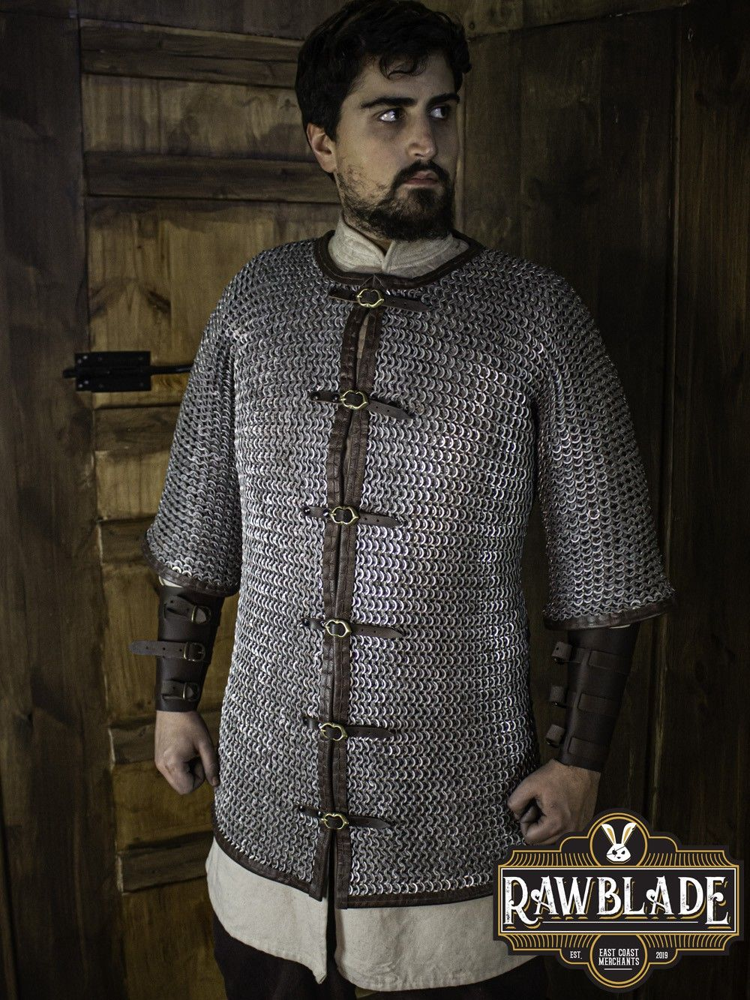

Gambeson
Listo para acolchar cualquier armadura.
-

Set Arthur (100€)
Las partes de la serie “Arthur” están cosidas en forma de diamante. Esto permite una buena movilidad sin reducir la protección. El chaleco está cerrado por cuatro hebillas en la parte delantera. En las sisas y en el dobladillo inferior, está acompañado con ojales de latón en los que se fijan las mangas y los cordones. El collar está finamente acolchado. Esto aporta más comodidad y agilidad.
Comprar
Gambeson Leopold (80€)
El gambesón “Leopold” es de corte clásico. Esto lo hace excelente para la combinación con una cota de malla. Tiene mangas cortas y está ranurado en la parte posterior. Por lo tanto, apenas limita la movilidad de su usuario y aún protege eficazmente contra roces de la armadura y contusiones en combate. El corte simple.
Comprar
Gambeson Mercenaries (70€)
El gambesón Mercenary es una armadura acolchada elaborada por Andracor Andracor lleva diseñando y fabricando a mano productos de cuero en Berlín desde 1999. Los estrictos criterios de selección de la materia prima de sus artesanos, y la enorme experiencia de los mismos, garantizan un trabajo de alta calidad. Los productos de Andracor tienen garantía de calidad en productos de cuero apropiados para el mundo del LARP y la recreación histórica medieval.
Comprar
Grebas de Gambeson Markward (25€)
Estas son las grebas de nuestra serie “Arthur”. Las grebas están forrados en forma de diamante y por lo tanto muy flexibles cuando se mueven. El efecto de relleno no se descuida, sino que se maximiza con un plus en el material. Las dos correas de hebilla permiten un ajuste individual a los cuerpos de los usuarios.
Comprar
Piernas Acolchadas (45€)
Ajustas tu gambesón, notando que tus dedos tiemblan. Es la primera vez que sales de casa dispuesto a correr una aventura por tu cuenta. Para ello, ahorraste dinero para comprar unas nuevas Piernas Acolchadas. No estás seguro de estar preparado para la batalla, pero al menos tu nuevo equipo sí
Comprar
Brazales Arthur (15€)
Los Brazales de Gambesón Arthur de Mytholon pertenecen al gambesón de la serie con el mismo nombre. Los brazales tienen un patrón en forma de diamante y, por lo tanto, proporcionan la máxima movilidad, sin minimizar el efecto del acolchado. Se cierran alrededor del brazo mediante dos correas con hebillas.
ComprarCota de Malla
Anillas de Acero. Se venden tambien por unidad.

Manga Larga Remachada (560€)
La Cota de Malla de Manga Larga de Epic Armoury es una camisa hecha con anillas de acero unidas por remaches siguiendo el patrón de 4 en 1. La cota cubre el cuerpo desde los hombros hasta las rodillas. Tiene mangas largas que protegen los brazos hasta las muñecas. Se recomienda usar debajo un gambesón y encima de todo un cinturón.
Comprar
Cota de Malla Alaric (Negro) (130€)
La Cota de Malla Alaric es una camisa hecha de anillas de acero siguiendo el patrón de 4 en 1. Esta cota de malla cubre el cuerpo desde los hombros hasta los muslos. Las mangas, al ser largas, protegen los brazos hasta las muñecas. Es ideal para infantería y sargentos medievales de armadura pesada, así como caballeros medievales. Se recomienda usarlo sobre un gambesón.
ComprarCota de Malla Hakan – Anilla plana remachada – Aluminio (280€)
La cota de malla Hakan tiene un sistema de apertura frontal para un ajuste más cómodo. Con acabados de cuero de alta calidad y con cierre de hebilla. Esta cota de malla no necesita mantenimiento ya que el aluminio permanece sin aceite ni productos. Los anillos están terminados con un anillo plano remachado.
Comprar
Manga Larga Remachada (220€)
La manga de cota de malla Freyr tiene un sistema de amarre frontal para un ajuste más cómodo. Con acabados de cuero de alta calidad y con cierre de hebilla. Esta manga de cota de malla no necesita mantenimiento ya que el aluminio permanece sin aceite ni productos. Los anillos están terminados con un anillo plano remachado.
ComprarArmadura de Acero
Imponte en el campo de batalla.
-
Armadura Vladimir (380€)
Tu escudero abrocha las correas de tu Set Armadura Vladimir a medida, ajustándola para que resulte más cómoda sobre tu gambesón. Pagaste bien por esta armadura y realmente esperas que la gente se impresione al verte en el frente cuando reluzca bajo el sol del campo de batalla. Tu herrero de confianza se encargó de asegurarte que el diseño de esa armadura era lo último en tecnología, capaz de resistir y desviar ataques e incluso flechas. Eres un guerrero poderoso, de hecho, para ser el dueño de tan fina artesanía debes serlo.
Comprar
Armadura Edward (380€)
Tu escudero abrocha las correas de tu Set Armadura Edward a medida, ajustándola para que resulte más cómoda sobre tu gambesón. Pagaste bien por esta armadura y realmente esperas que la gente se impresione al verte en el frente cuando reluzca bajo el sol del campo de batalla. Tu herrero de confianza se encargó de asegurarte que el diseño de esa armadura era lo último en tecnología, capaz de resistir y desviar ataques e incluso flechas. Eres un guerrero poderoso, de hecho, para ser el dueño de tan fina artesanía debes serlo.
ComprarArmadura Galahad (380€)
Tu escudero abrocha las correas de tu Set de Armadura Galahad Paladin a medida, ajustándola para que resulte más cómoda sobre tu gambesón. Pagaste bien por esta armadura y realmente esperas que la gente se impresione al verte en el frente cuando reluzca bajo el sol del campo de batalla. Tu herrero de confianza se encargó de asegurarte que el diseño de esa armadura era lo último en tecnología, capaz de resistir y desviar ataques e incluso flechas. Eres un guerrero poderoso, de hecho, para ser el dueño de tan fina artesanía debes serlo.
Comprar
Bacinete Avenger (120€)
Bascinete con visera móvil y desmontable, lo que hace que este casco sea muy versátil. Permite una gran visión y audición con una alta protección. El portador debe tener una circunferencia de la cabeza de 57-61 cm (sin capucha). Cuenta con un forro de cuero que tiene un corte en forma de cúpula, se puede ajustar y ofrece una comodidad agradable, ya que la placa metálica no descansa directamente sobre la cabeza. Además, el casco tiene un mentón con el que ceñirlo. El interior está recubierto con pintura antioxidante. Fabricación absolutamente hecha a mano.
Comprar
Bacinete Siglo XIV (120€)
Bascinete con visera móvil y desmontable, lo que hace que este casco sea muy versátil. Permite una aceptable visión y audición con una alta protección. El portador debe tener una circunferencia de la cabeza de 57-61 cm (sin capucha). Cuenta con un forro de cuero que tiene un corte en forma de cúpula, se puede ajustar y ofrece una comodidad agradable, ya que la placa metálica no descansa directamente sobre la cabeza. Además, el casco tiene un mentón con el que ceñirlo. El interior está recubierto con pintura antioxidante. Fabricación absolutamente hecha a mano.
Comprar
Barbuta con Visor [Pavonado] (140€)
La Barbuta con Visor de Epic Armoury es un casco completo, elegantemente curvado y con una visera distintiva. La visera es móvil y se puede voltear sobre el casco. Ya sea hacia arriba o hacia abajo, la visera se puede dejar fija gracias a un pasador y una cadena. La visera tiene dos ranuras rectangulares para los ojos, nariz plana y un gran orificio de respiración en forma de cruz maltesa. El casco es elegante a la vez que cómodo de llevar, y brinda una protección total a la cabeza gracias a su diseño. La Barbuta fue utilizado principalmente por los extravagantes mercenarios italianos del renacimiento y fue llevada por las tropas de infantería por la excelente combinación de protección y visibilidad. Hecho para usar con ropa de estilo renacentista, tiene una sensación de alta fantasía que se adaptará a muchos personajes. Asegure el casco apretando la correa de cuero debajo de la barbilla, manteniendo el casco en su lugar. Está hecho de acero dulce de 1 mm de grosor y correas y accesorios de cuero rígido.
Comprar
Babera Mortimer (43€)
La Babera “Mortimer” se adapta perfectamente a la coraza del mismo nombre. El medio cuello alto tiene una visera móvil y protege el cuello, así como la parte inferior de la cara. La babera se abrocha con un cinturón en el cuello. Junto con la coraza “Mortimer” y uno de nuestros cascos Sallet, obtienes una armadura que se adapta bien a los trajes del siglo XV. Por supuesto, el sabor también se puede combinar con otras armaduras. Las hombreras no se le pueden armar no se pueden conectar
Comprar
Gorjal Gustav (35€)
Miras a tu oficial principal mientras se abre camino por la línea de tus compañeros soldados. Su destino y el destino de toda su unidad dependen de la palabra de este veterano, y te sientes aliviado de no soportar una carga tan pesada. -¡Debemos luchar!”, Grita su oficial para que todos lo oigan. Ajustas tu Gorjal Gustav del cuello, revisando las hebillas mientras lo escuchas continuar. ¡Por nuestros hogares y por nuestras familias, lucharemos hasta que no podamos luchar más! Con una alegría contundente, tus compañeros soldados se preparan para la carga. Desenvainas tu arma, ansioso y nervioso a la vez.
Comprar
Gorjal Kaspar (90€)
El gorjal “Kaspar” de Mytholon posee un diseño único e imponente, y puede combinar perfectamente con el resto de armadura de la serie “Kaspar”. La combinación de dos colores en contraste le dan un toque de elegancia y el diseño se debe a los patrones usados a mediados del siglo XVI al XVII, y fue sobre todo usada por los jinetes alemanes, sin embargo, queda genial para cualquier tipo de personaje LARP y recreaciones históricas.
Comprar
Coraza Edward (180€)
La Coraza Edward está inspirado en las armaduras de la Baja Edad Media. Las placas laminadas hacen que el movimiento sea muy ágil. Los adornos y remaches ornamentales le dan a la armadura un carácter noble pero también intimidante. Los tassets de la serie “Edward” se pueden montar en correas en el segmento inferior de la placa del pecho.
Comprar
Coraza Vladimir (220€)
Llamativa armadura para el torso compuesta por varios segmentos articulados. Estas piezas dejan mucha más libertad de movimiento para el usuario que las placas normales del torso y lo hacen más cómoda en la batalla.
Comprar
Coraza Galahad (250€)
Las dos piezas se unen mediante correas en los hombros y otra adicional a cada lado, así su portador queda completamente cómodo para moverse sin dificultad. Se pueden agregar otras piezas de la misma serie para formar una armadura completa y representar un guerrero de infantería pesada.
Comprar
Piernas Completas Markward (120€)
Las Musleras Completas Markward de Mytholon cubren desde el muslo, la rodilla a las pantorrilla. Permite combinarlos con otros tipos de grebas. Estas musleras se atan a la cadera del portador mediante cinturones de cuero rígido. Esta armadura consta de 8 piezas cada una, lo que le permite tener una gran flexibilidad. Está elaborada con acero dulce de 1,2 mm.
Comprar
Piernas Completas Balthasar (120€)
Las Piernas Completas Balthasar de Mytholon están hechas mediante seis segmentos. Las rodillas están articuladas y no dificultan correr o pelear con ellas. Al igual que todas las partes de armadura de la “serie Balthasar”, los protectores de las piernas están elegantemente diseñados y decorados con listones y remaches. El segmento inferior de la pierna permite el uso de tassets adicionales. Esto aumenta la agilidad y proporciona a la armadura un detalle adicional. Son perfectas para caballeros, paladines y otros personajes con armadura pesada, el protector de piernas “Balthasar” es un complemento ideal.
Comprar
Piernas Completas Elias (90€)
Las piernas completas Elías están diseñadas para proteger las piernas desde el tobillo hasta la parte superior del muslo. Las rodillas están articuladas y, por lo tanto, no interfieren con el movimiento. Están hechos de acero dulce de 1,2 mm de grosor y correas y accesorios de cuero rígido.
ComprarGrebas Brave (30€)
Estas grebas protegen aproximadamente 2/3 de la parte inferior de la pierna. La pieza tiene un grosor de 3 a 4 mm y garantiza una seguridad absoluta para usuarios y jugadores. Las correas de sujeción están hechas de cuero genuino resistente a la rotura (2 – 3 mm de espesor, 2.5 mm de ancho). Las hebillas son fáciles de abrir o cerrar rápidamente y son extremadamente robustas. El interior está recubierto con pintura antioxidante.
Comprar
Grebas Dark Drake (38€)
Las Grebas Dark Drake de Epic Armoury es un conjunto diseñado para proteger las espinillas. Posee bordes redondeados, decorados con remaches de acero brillante. Estas grebas están diseñadas para ajustarse sobre las espinillas, dejando el espacio óptimo para usar gambesón debajo o unas polainas. Se extienden por debajo de la rodilla y se estrechan alrededor de los tobillos, sujetándose gracias a unas correas de cuero rígido en la parte baja de la rodilla y otra por encima de los tobillos. Cada placa está hecha de acero dulce galvanizado de 1mm de grosor.
Comprar
Grebas Markward (30€)
Las grebas Markward son compatibles con la serie “Markward” de Mytholon. Pueden ser simples y con apenas adornos, sin embargo, esto las hace combinar perfectamente con otro tipo de armaduras. Están elaboradas con acero dulce de 1,2 mm de grosor y las correas para ajustarlas con cuero rígido.
Comprar
Hombreras Vladimir (130€)
Tu escudero abrocha las correas de tus Hombreras Vladimir a medida, ajustándolas para que resulten más cómodas sobre tu gambesón. Pagaste bien por esta pieza de armadura y realmente esperas que la gente se impresione al verte en el frente cuando reluzcan bajo el sol del campo de batalla. Tu herrero de confianza se encargó de asegurarte que el diseño de esas hombreras era lo último en tecnología, capaz de resistir y desviar ataques e incluso flechas. Eres un guerrero poderoso, de hecho, para ser el dueño de tan fina artesanía debes serlo.
Comprar
Hombreras Edward (130€)
Este par de hombreras grandes está construido con dos alas en cada hombrera. Esto hace que cada usuario parezca aún más grande. Las hombreras están formadas por dos partes (hombro y parte superior del brazo) y se unen en el cuello o el torso de una armadura existente y se fijan a la parte superior del brazo del usuario para mantenerlas en su lugar. De esta manera, se mantienen en su lugar y molestarán un poco el movimiento de los usuarios.
Comprar
Brazos Vladimir (130€)
Los Brazos Completos de la serie Edward, son lo suficientemente grandes como para usarlos sobre un gambesón, e incluso añadirle una cota de malla. La parte superior posee bufas en la parte interna. Las correas y hebillas del brazo, el codo y el antebrazo permiten que la armadura se ajuste bien al brazo. El codo queda totalmente protegido por el “caparazón”, y el antebrazo está totalmente cubierto por piezas de armadura. Está hecho de acero dulce de 1,2 mm de grosor.
Comprar
Brazos Edward (130€)
Los Brazos Completos de la serie Edward, son lo suficientemente grandes como para usarlos sobre un gambesón, e incluso añadirle una cota de malla. La parte superior posee bufas en la parte interna. Las correas y hebillas del brazo, el codo y el antebrazo permiten que la armadura se ajuste bien al brazo. El codo queda totalmente protegido por el “caparazón”, y el antebrazo está totalmente cubierto por piezas de armadura. Está hecho de acero dulce de 1,2 mm de grosor.
Comprar
Brazos Elias (80€)
Tu escudero abrocha las correas de tus Brazos Completos Elias a medida, ajustándolas para que resulten más cómodas sobre tu gambesón. Pagaste bien por esta pieza de armadura y realmente esperas que la gente se impresione al verte en el frente cuando reluzcan bajo el sol del campo de batalla. Tu herrero de confianza se encargó de asegurarte que el diseño de esas hombreras era lo último en tecnología, capaz de resistir y desviar ataques e incluso flechas. Eres un guerrero poderoso, de hecho, para ser el dueño de tan fina artesanía debes serlo.
ComprarBrigantinas
El punto medio entre ser ligero y tanque.